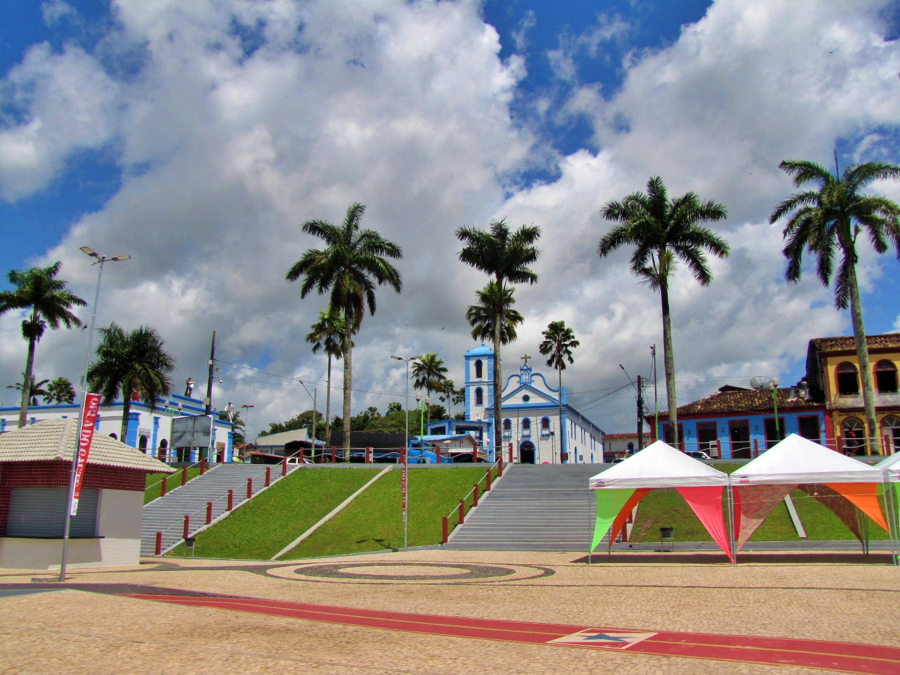

Bragança é um município localizado no nordeste do estado do Pará, às margens do rio Caeté, a aproximadamente 210 quilômetros de Belém a capital. Fundada em 1613, é uma das cidades mais antigas do estado e possui grande importância histórica, cultural e econômica para a região. Conhecida como a Pérola do Caeté, Bragança destaca-se por sua arquitetura histórica, suas manifestações culturais e suas belas paisagens naturais, que incluem praias, manguezais, rios e áreas de preservação ambiental. Sua história está diretamente ligada à ocupação da região amazônica e ao desenvolvimento das atividades comerciais e pesqueiras.
A economia bragantina é marcada principalmente pela pesca, pelo comércio, pela agricultura e pelo turismo, com destaque para a produção e comercialização do caranguejo e de outros recursos provenientes do litoral. A cidade também é reconhecida nacionalmente pela tradicional Marujada de São Benedito, manifestação cultural e religiosa que representa uma importante expressão da identidade local. Além disso, a proximidade com a praia de Ajuruteua e com a Reserva Extrativista Marinha de Caeté-Taperaçu reforça sua relevância ambiental e turística. Dessa forma, Bragança reúne patrimônio histórico, diversidade natural e riqueza cultural, constituindo um dos municípios de maior destaque no contexto socioeconômico e cultural do nordeste paraense.
